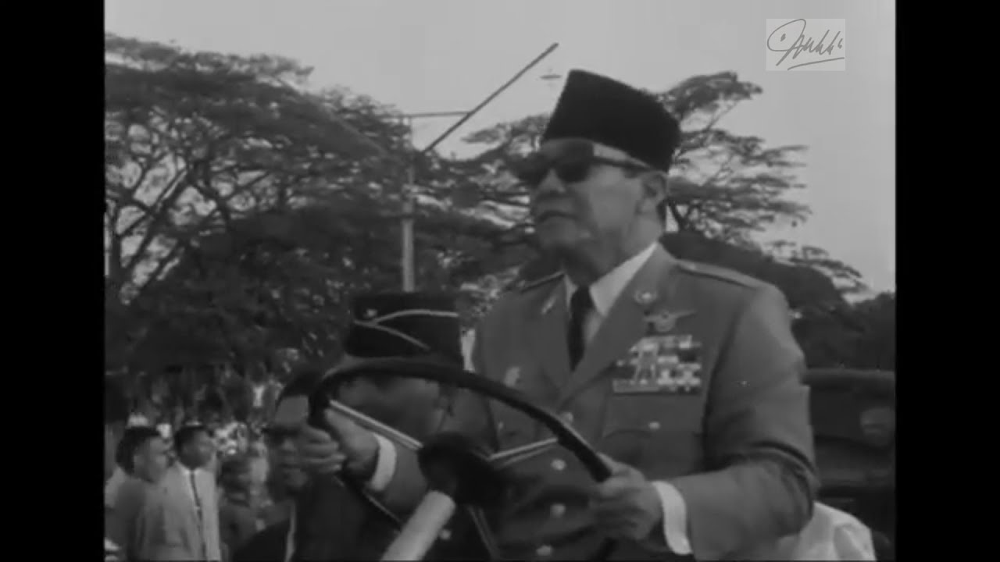
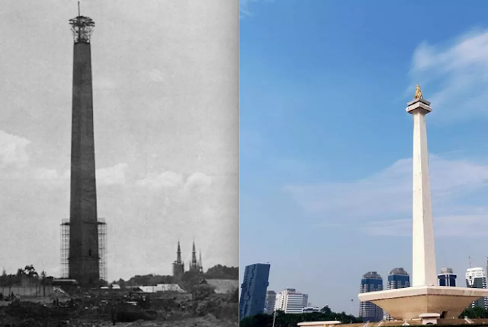
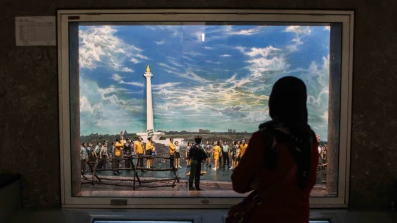
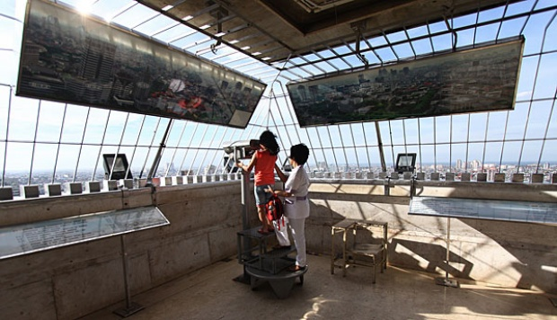
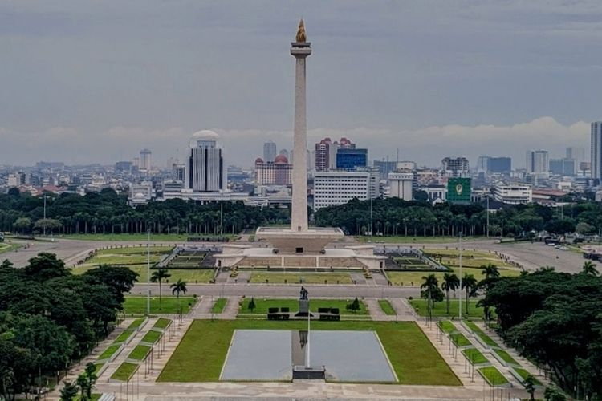
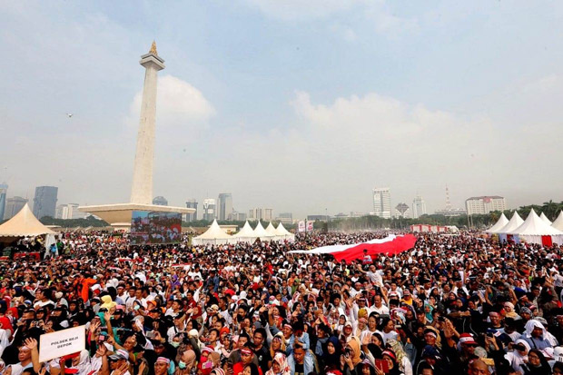

Kepentingan Sejarah

Monas dibangun untuk memperingati perjuangan Indonesia dalam merebut kemerdekaan dari penjajahan Belanda. Ide monumen ini diusulkan oleh Presiden pertama Indonesia, Soekarno, pada tahun 1960-an, dan diresmikan pada tanggal 12 Juli 1975. Pembangunan Monas bertujuan untuk melambangkan persatuan Indonesia dan komitmen bangsa ini terhadap kemerdekaan.
Keajaiban Arsitektur

Dirancang oleh arsitek Indonesia, Frederich Silaban, Monas menampilkan perpaduan unik elemen arsitektur modern dan tradisional. Monumen ini terdiri dari sebuah obelisk yang menjulang, yang dihiasi dengan api emas berlapis kertas emas, mewakili semangat kebebasan. Obelisk dikelilingi oleh platform berbentuk persegi yang dihiasi dengan relief-relief yang menggambarkan sejarah Indonesia dan perjuangannya dalam merebut kemerdekaan.
Museum Sejarah Nasional

Di dalam dasar monumen terdapat Museum Sejarah Nasional, yang menawarkan perjalanan komprehensif melalui masa lalu Indonesia. Museum ini menampilkan koleksi artefak, dokumen sejarah, dan display interaktif yang menceritakan sejarah negara ini, mulai dari masa pra-kolonial hingga masa kini. Pengunjung dapat menjelajahi beragam pameran, termasuk diorama, presentasi multimedia, dan galeri yang menyoroti peristiwa-peristiwa penting dan tokoh-tokoh yang membentuk takdir Indonesia.
Tempat Pemandagan Ikonik

Naik ke dek pengamat Monas menawarkan pemandangan panorama yang memukau dari lanskap Jakarta. Pengunjung dapat menggunakan lift atau menaiki tangga untuk mencapai platform dan menikmati pemandangan kota yang luas. Dari tempat ini, seseorang dapat memandang dengan kagum jalan-jalan yang ramai, pencakar langit menjulang, dan perpaduan arsitektur kuno dan modern yang menjadi ciri khas Jakarta.
Lingkugan Indah

Monas terletak di taman luas yang dikenal sebagai Lapangan Merdeka, yang meliputi lebih dari 80 hektar. Taman ini merupakan tempat rekreasi populer bagi penduduk setempat dan wisatawan, menawarkan ruang hijau yang luas, jalur lari, dan air mancur. Tempat ini adalah tempat yang tepat untuk bersantai, berpiknik, atau berjalan-jalan santai sambil menikmati pemandangan yang indah.
Acara Budaya Dan Festival

Monas menjadi pusat yang hidup untuk berbagai acara budaya dan perayaan sepanjang tahun. Perayaan Hari Kemerdekaan Indonesia pada tanggal 17 Agustus menyaksikan perayaan yang meriah di monumen ini, termasuk parade, pertunjukan tradisional, dan upacara pengibaran bendera. Lapangan sekitar Monas sering menjadi tempat konser, pameran seni, dan kegiatan budaya lainnya yang memamerkan keragaman dan kekayaan seni dan tradisi Indonesia.
Monas adalah simbol yang kuat dari kemerdekaan dan persatuan Indonesia. Dengan signifikansi sejarah yang kaya, arsitektur yang mencolok, dan pameran yang menarik, Monas menawarkan pengunjung gambaran menarik tentang masa lalu, masa kini, dan masa depan negara ini. Kunjungan ke Monas bukan hanya pengalaman yang edukatif, tetapi juga kesempatan untuk menghargai semangat kolektif dan ketahanan rakyat Indonesia.